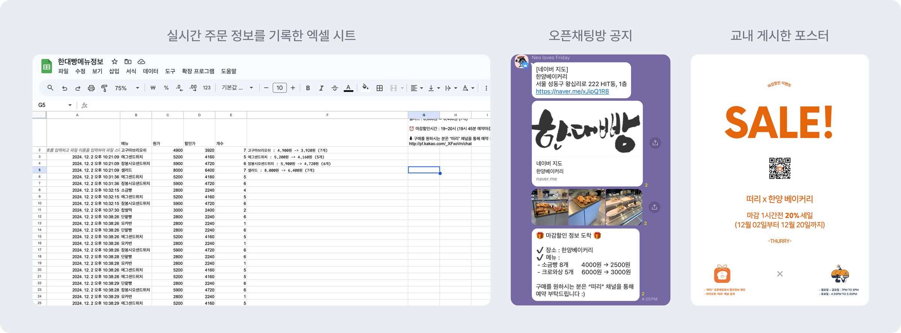
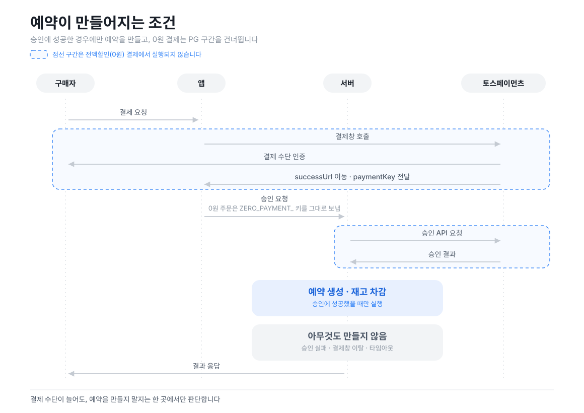
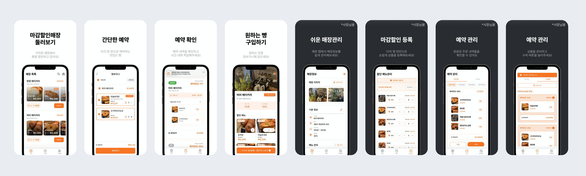

이번에는 마감임박 베이커리 할인 서비스 떠리의 이야기예요. 앱 없이 수요를 검증하는 것부터, 사장님들을 설득해 앱을 출시하기까지를 담았어요.

앱을 만들기 전에 한 달을 팔았어요
떠리는 환경·사회문제를 주제로 한 공모전을 준비하면서 시작됐어요.
여러 아이디어 중 마감 할인이라는 키워드가 남았어요. 조사해보니 해외에도 국내에도 비슷한 서비스가 있었는데, 정작 학교 주변에서는 마감 할인을 하는 가게를 본 적이 없었거든요.
자료 조사만으로는 이유를 알 수 없었어요. 그래서 3일 동안 마감 시간에 맞춰 주변 베이커리를 직접 돌았어요. 빵은 매일 남고 있었고, 사장님들은 남은 빵을 알바생에게 주거나 폐기하고 있다고 하셨어요. 그렇다면 다음 질문도 단순했죠.
‘우리가 남는 빵을 대신 팔아준다면,
사장님은 참여하고 사용자는 살까?’
접근성이 좋았던 한양대 베이커리 사장님께 설명드리고 동의를 얻었어요. 그리고 앱부터 만들지 않았어요. 포스터와 카카오톡 오픈채팅방, 엑셀 시트 하나로 한 달을 운영했어요.
오픈채팅방에는 300명이 모였어요. 매일 30개 정도 빵이 남았고 그중 10~15개가 팔렸어요. 하루 약 5만 원, 월 100만 원 규모였죠. 완성된 제품 없이도 사람이 모이고 거래가 일어났어요.
엑셀 시트가 기획서였어요
사용자가 오픈채팅으로 주문을 보내면 엑셀에서 재고를 차감하고 합계를 계산해 안내했어요. 매장에 도착하면 주문 내역과 픽업 여부를 다시 확인했고요. 매일 마감 시간 내내 누군가는 매장에 붙어 있어야 했고, 당연히 비효율적이었어요.
그러나 이 과정에서 제품이 풀어야 할 문제가 저절로 드러났어요.
- 결제 중에 품절되면 어떻게 처리할 것인가
- 실제 재고보다 주문이 많으면 무엇을 취소할 것인가
- 매장에 온 사용자를 어떻게 확인하고 픽업 완료를 재고에 반영할 것인가
- 매장 직원이 최소한의 조작으로 등록·확인하게 하려면 어떻게 해야 하는가
책상에서 화면부터 그렸다면 전부 놓쳤을 문제들이에요. 초기 제품에서는 기능을 상상하기보다, 먼저 수작업으로 거래를 성사시켜보는 게 더 정확한 요구사항을 만들 수 있다는 걸 알게 되었죠.
결제를 붙이는 것부터 관문이었어요
실제 결제를 받기 위한 PG 계약과 심사에는 사업자가 필요했어요. 사업자등록부터 결제 연동까지, 학생 다섯 명이 고객의 돈을 받을 수 있는 상태를 만드는 데만 몇 주가 걸렸죠.
연동 자체는 결제위젯이 대부분 해결해줬어요. 카드든 간편결제든 같은 흐름으로 돌아오니까요. 제가 정한 건 하나였어요. 승인은 서버에서만 호출하고, 승인이 성공했을 때만 예약을 생성하는 것. "돈은 빠졌는데 예약이 없는" 상태를 구조적으로 막기 위해서였습니다.
진짜 예외는 0원 결제였어요. 토스페이먼츠의 최소 결제 금액은 100원이라, 전액 할인 상품은 PG를 태울 수가 없거든요. 여기서 예약 생성·재고 차감·환불 복구를 따로 짜면, 같은 일을 하는 코드가 두 군데로 갈라지게 돼요.
그래서 0원 주문에는 ZERO_PAYMENT_ 키를 붙여 PG 승인 구간만 건너뛰고 나머지는 유료 결제와 똑같이 통과하게 했어요.

개발 팀 리드로서 실패한 지점

처음엔 화면 단위로 업무를 나눴어요. 각자 맡은 페이지를 완성하면 제품이 자연스럽게 붙을 거라고 봤죠.
그런데 각자 만든 화면을 하나로 합치자 이런 문제들이 쏟아졌어요.
- 새로고침 후 데이터가 갱신되지 않았다.
- 가격과 할인 금액이 잘못 계산됐다.
- 화면마다 데이터 처리 방식이 달랐다.
- 개별 화면은 동작하는데 전체 주문 흐름에서는 오류가 났다.
역량 문제가 아니었어요. 제가 화면의 생김새만 설명하고 데이터가 어떻게 변해야 하는지, 어떤 예외까지 처리해야 하는지를 정의하지 않은 거였어요.
그 뒤로는 작업을 나눌 때 화면 대신 인터페이스를 먼저 합의해요. 이 기능이 어떤 입력을 받아 무엇을 돌려주는지, 상태가 어떤 순서로 바뀌는지, 어떤 조건에서 실패하는지, 무엇이 충족되면 완료인지까지요.
작업 지시서는 길어졌지만 통합 단계에서 터지는 일이 사라졌어요. 지금 회사에서 PoC를 설계할 때도 화면보다 데이터 흐름과 실패 조건을 먼저 적는 습관이 생겼어요.
알림은 손으로 먼저 보내봤어요
리텐션을 올릴 방법을 찾아야 했어요. 그런데 알림 시스템부터 만들지는 않았어요. 며칠 동안 직접 손으로 메시지를 보냈습니다.
이전에 소금빵을 산 사람에게 "오늘 소금빵 3개 남았어요"를 보내고, 마감 30분 전에 근처 사용자에게 알렸어요. 문구와 시점을 바꿔가며 어떤 조합이 실제 픽업으로 이어지는지 봤죠.
반응이 갈린 지점은 명확했어요. 일반 홍보 알림은 무시됐지만, 이미 관심을 보인 상품과 지금 살 수 있는 시점을 연결한 알림은 달랐습니다. 이 조합만 자동화했더니 구매가 1.8배로 늘었어요.
여기에 즐겨찾기를 붙였어요. 처음 앱을 연 사용자가 주변 매장을 둘러보며 자연스럽게 즐겨찾기를 남기도록 온보딩을 설계했고요.
알림이 통하려면 먼저 관심 신호가 있어야 했거든요. 사용자가 직접 알림받을 대상을 만들어두게 한 셈이에요.
이어지는 글무료로 줘도 사람들이 오지 않는다면?